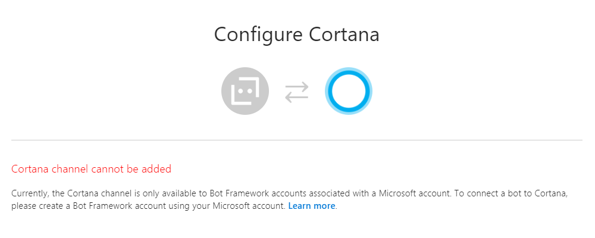
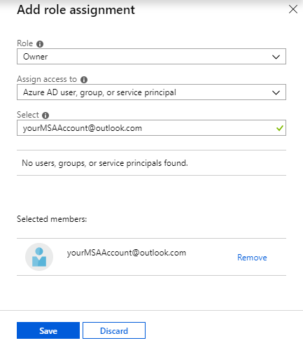

When you try to create Cortana channel using Microsoft Bot Framework you may get the error saying “Cortana channel cannot be added”:
 This happens because Cortana Skills can’t be created using Azure Active Directory accounts (source).
Workaround Link to heading
You must register a regular MSA account (like @outlook.com) or use your existing one. Using your AAD account, open Azure portal, navigate to Bot Channels Registration -> Access control (IAM). Click Add role assignment and assign owner role to your MSA account:

You will receive an invitation email. Accepting this invite will send you back to the bot channel registrations, but this time you’ll be logged in with MSA account. Now you should be able to successfully add Cortana channel the same way you tried before.